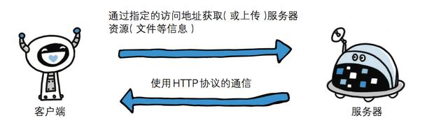
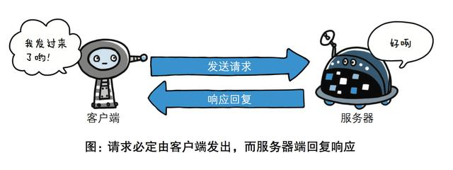
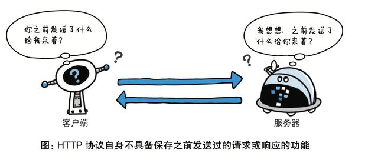
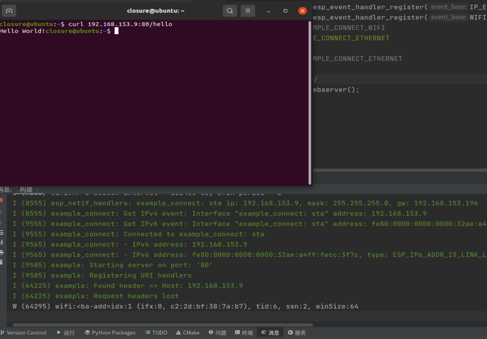

HTTP over WiFi#
概述#
超文本传输协议（英文：HyperText Transfer Protocol，缩写：HTTP）是一种用于分布式、协作式和超媒体信息系统的应用层协议。HTTP是万维网的数据通信的基础。
HTTP是一个客户端终端（用户）和服务器端（网站）请求和应答的标准（TCP）。通过使用网页浏览器、网络爬虫或者其它的工具，客户端发起一个HTTP请求到服务器上指定端口（默认端口为80）。我们称这个客户端为用户代理程序（user agent）。应答的服务器上存储着一些资源，比如HTML文件和图像。我们称这个应答服务器为源服务器（origin server）。在用户代理和源服务器中间可能存在多个“中间层”，比如代理服务器、网关或者隧道（tunnel）。
尽管TCP/IP协议是互联网上最流行的应用，HTTP协议中，并没有规定必须使用它或它支持的层。事实上，HTTP可以在任何互联网协议上，或其他网络上实现。HTTP假定其下层协议提供可靠的传输。因此，任何能够提供这种保证的协议都可以被其使用。因此也就是其在TCP/IP协议族使用TCP作为其传输层。
通常，由HTTP客户端发起一个请求，创建一个到服务器指定端口（默认是80端口）的TCP连接。HTTP服务器则在那个端口监听客户端的请求。一旦收到请求，服务器会向客户端返回一个状态，以及返回的内容，如请求的文件、错误消息、或者其它信息。

基于 请求-响应 的模式
HTTP协议规定,请求从客户端发出,最后服务器端响应该请求并 返回。换句话说,肯定是先从客户端开始建立通信的,服务器端在没有 接收到请求之前不会发送响应。

无状态保存
HTTP是一种不保存状态,即无状态(stateless)协议。HTTP协议 自身不对请求和响应之间的通信状态进行保存。也就是说在HTTP这个 级别,协议对于发送过的请求或响应都不做持久化处理。

无连接
无连接的含义是限制每次连接只处理一个请求。服务器处理完客户的请求，并收到客户的应答后，即断开连接。采用这种方式可以节省传输时间，并且可以提高并发性能，不能和每个用户建立长久的连接，请求一次相应一次，服务端和客户端就中断了。但是无连接有两种方式，早期的http协议是一个请求一个响应之后，直接就断开了，但是现在的http协议1.1版本不是直接就断开了，而是等几秒钟，这几秒钟是等什么呢，等着用户有后续的操作，如果用户在这几秒钟之内有新的请求，那么还是通过之前的连接通道来收发消息，如果过了这几秒钟用户没有发送新的请求，那么就会断开连接，这样可以提高效率，减少短时间内建立连接的次数，因为建立连接也是耗时的，默认的好像是3秒中现在，但是这个时间是可以通过咱们后端的代码来调整的，自己网站根据自己网站用户的行为来分析统计出一个最优的等待时间。
代码API#
对于HTTP Server 和 Client的API函数，此次不做赘述，具体可参考乐鑫ESP开发文档
ESP HTTP Server
https://docs.espressif.com/projects/esp-idf/zh_CN/v4.4.1/esp32/api-reference/protocols/esp_http_server.html
ESP HTTP Client
https://docs.espressif.com/projects/esp-idf/zh_CN/v4.4.1/esp32/api-reference/protocols/esp_http_client.html
简单的 HTTPD 服务器示例#
httpd是Apache超文本传输协议(HTTP)服务器的主程序。被设计为一个独立运行的后台进程，它会建立一个处理请求的子进程或线程的池。
该示例由 HTTPD 服务器演示和 URI 处理演示组成： 1. URI \hello for GET 命令返回“Hello World！” 消息 2. URI \echo for POST 命令回显 POSTed 消息
软件准备：#
后续测试需要用到CURL，使用CURL进行测试时，需要先安装CURL,命令行如下：
sudo apt install curl
安装完成成功后输入
curl --version
如果有如下输出则安装成功
curl 7.68.0 (x86_64-pc-linux-gnu) libcurl/7.68.0 OpenSSL/1.1.1f zlib/1.2.11 brotli/1.0.7 libidn2/2.2.0 libpsl/0.21.0 (+libidn2/2.2.0) libssh/0.9.3/openssl/zlib nghttp2/1.40.0 librtmp/2.3
Release-Date: 2020-01-08
Protocols: dict file ftp ftps gopher http https imap imaps ldap ldaps pop3 pop3s rtmp rtsp scp sftp smb smbs smtp smtps telnet tftp
Features: AsynchDNS brotli GSS-API HTTP2 HTTPS-proxy IDN IPv6 Kerberos Largefile libz NTLM NTLM_WB PSL SPNEGO SSL TLS-SRP UnixSockets
配置项目#
命令行界面
打开项目配置菜单 ( idf.py menuconfig)
Clion界面
选择示例的文件夹并用Clion打开
添加各项配置（参考Clion下ESP-IDF的配置与开发）
选择 menuconfig 并运行
在“Example Connection Configuration”菜单下配置 Wi-Fi 或以太网。
构建和烧录#
构建项目并将其烧写到板上，然后运行监控工具查看串行输出：
命令行界面：
idf.py -p PORT flash monitor （要退出串行监视器，请键入Ctrl-]。）
Clion界面：
选择 flash 并运行
选择 monitor 并运行
示例输出#
打开监视器后，查看esp32接入WiFi后取得的IP地址
打开终端，例如IP地址为192.168.43.130时，在终端中输入如下命令：（注意：端口 :80 不要更改，只更改IP）
curl 192.168.43.130:80/hello
接下来您会看到如下图情况：

并且监视器中会有如下输出：
I (9580) example_connect: - IPv4 address: 192.168.194.219
I (9580) example_connect: - IPv6 address: fe80:0000:0000:0000:266f:28ff:fe80:2c74, type: ESP_IP6_ADDR_IS_LINK_LOCAL
I (9590) example: Starting server on port: '80'
I (9600) example: Registering URI handlers
I (66450) example: Found header => Host: 192.168.194.219
I (66460) example: Request headers lost
故障排除#
如果服务器日志显示“httpd_parse: parse_block: request URI/header too long”，尤其是在处理POST请求时，那么你可能需要增加HTTPD_MAX_REQ_HDR_LEN，你可以在项目配置菜单（idf.py menuconfig）中找到：Component config -> HTTP Server -> Max HTTP Request Header Length
官方测试提示：
run the test script : "python scripts/client.py \<IP\> \<port\> \<MSG\>"
the provided test script first does a GET \hello and displays the response
the script does a POST to \echo with the user input \<MSG\> and displays the response
or use curl (asssuming IP is 192.168.43.130):
"curl 192.168.43.130:80/hello" - tests the GET "\hello" handler
"curl -X POST --data-binary @anyfile 192.168.43.130:80/echo > tmpfile"
"anyfile" is the file being sent as request body and "tmpfile" is where the body of the response is saved
since the server echoes back the request body, the two files should be same, as can be confirmed using : "cmp anyfile tmpfile"
"curl -X PUT -d "0" 192.168.43.130:80/ctrl" - disable /hello and /echo handlers
"curl -X PUT -d "1" 192.168.43.130:80/ctrl" - enable /hello and /echo handlers
HTTP 请求 示例#
使用 POSIX 套接字发出非常简单的 HTTP 请求。
配置项目#
命令行界面
打开项目配置菜单 ( idf.py menuconfig)
Clion界面
选择示例的文件夹并用Clion打开
添加各项配置（参考Clion下ESP-IDF的配置与开发）
选择 menuconfig 并运行
在“Example Connection Configuration”菜单下配置 Wi-Fi 或以太网。
构建和烧录#
构建项目并将其烧写到板上，然后运行监控工具查看串行输出：
命令行界面：
idf.py -p PORT flash monitor （要退出串行监视器，请键入Ctrl-]。）
Clion界面：
选择 flash 并运行
选择 monitor 并运行
示例输出#
I (10557) example_connect: - IPv4 address: 192.168.194.219
I (10557) example_connect: - IPv6 address: fe80:0000:0000:0000:266f:28ff:fe80:2c74, type: ESP_IP6_ADDR_IS_LINK_LOCAL
W (10577) wifi:<ba-add>idx:0 (ifx:0, ee:6d:19:60:f6:0e), tid:0, ssn:3, winSize:64
I (10587) example: DNS lookup succeeded. IP=93.184.216.34
I (10587) example: ... allocated socket
I (10917) example: ... connected
I (10917) example: ... socket send success
I (10927) example: ... set socket receiving timeout success
HTTP/1.0 200 OK
Age: 317271
Cache-Control: max-age=604800
Content-Type: text/html; charset=UTF-8
Date: Mon, 06 Sep 2021 08:09:49 GMT
Etag: "3147526947+ident"
Expires: Mon, 13 Sep 2021 08:09:49 GMT
Last-Modified: Thu, 17 Oct 2019 07:18:26 GMT
Server: ECS (nyb/1D2B)
Vary: Accept-Encoding
X-Cache: HIT
Content-Length: 1256
Connection: close
<!doctype html>
<html>
<head>
<title>Example Domain</title>
<meta charset="utf-8" />
<meta http-equiv="Content-type" content="text/html; charset=utf-8" />
<meta name="viewport" content="width=device-width, initial-scale=1" />
<style type="text/css">
body {
background-color: #f0f0f2;
margin: 0;
padding: 0;
font-family: -apple-system, system-ui, BlinkMacSystemFont, "Segoe UI", "Open Sans", "Helvetica Neue", Helvetica, Arial, sans-serif;
}
div {
width: 600px;
margin: 5em auto;
padding: 2em;
background-color: #fdfdff;
border-radius: 0.5em;
box-shadow: 2px 3px 7px 2px rgba(0,0,0,0.02);
}
a:link, a:visited {
color: #38488f;
text-decoration: none;
}
@media (max-width: 700px) {
div {
margin: 0 auto;
width: auto;
}
}
</style>
</head>
<body>
<div>
<h1>Example Domain</h1>
<p>This domain is for use in illustrative examples in documents. You may use this
domain in literature without prior coordination or asking for permission.</p>
<p><a href="https://www.iana.org/domains/example">More information...</a></p>
</div>
</body>
</html>
I (11467) example: ... done reading from socket. Last read return=0 errno=128.
I (11477) example: 10...
I (12477) example: 9...
I (13477) example: 8...